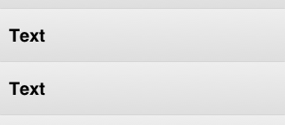

PrettyTableViewCell Class Reference
| Inherits from | UITableViewCell |
| Declared in | PrettyTableViewCell.h PrettyTableViewCell.m |
Overview
PrettyTableViewCell is a subclass of UITableViewCell, so it
is fully compatible with any UITableView.
PrettyTableViewCell adds a set of customizations such as corner radius,
shadow, background gradient, selection gradient customization…
It only uses CoreGraphics under the hood, so you can expect a nice
performance.
Using it
In your dataSource tableView:cellForRowAtIndexPath: body, change all
references to UITableViewCell to PrettyTableViewCell, and add this call:
[cell prepareForTableView:tableView indexPath:indexPath];
Just by doing that you’ll have a nice cell, like the cells below:

Customizing appearance
PrettyCells are compatible with both grouped and plain tables.
Grouped tables
You can change the cell’s appearance as follows:
- cell’s shadow (border will be disabled when the shadow is enabled).
- cell’s background color or gradient.
- cell’s border color (border will be disabled when the shadow is enabled).
- cell’s corner radius.
- cell’s separator.
- cell’s selection gradient.
Plain tables
You can change the cell’s appearance as follows:
- cell’s background color or gradient.
- cell’s separator.
- cell’s selection gradient.

Performance
It only uses CoreGraphics under the hood, so you can expect a nice
performance.
Anyway, you should select the Color Blended Layers option and check how it looks.
Furthermore, to even reduce more the transparent regions, you can set the
tableViewBackgroundColor property to the table’s background color
(tableView.backgroundColor).
Be aware that although the cell is drawn with CoreGraphics, its contents might not. In fact, if you use the properties textLabel, detailTextLabel and so, the performance will be limited by them. So if you need to improve it, take a look at this Twitter article: http://engineering.twitter.com/2012/02/simple-strategies-for-smooth-animation.html and draw the contents by yourself.
Tasks
Customizing appearance
-
dropsShadowIndicates if the cell should drop a shadow or not.
property -
shadowOpacityIndicates the shadow opacity to use.
property -
customBackgroundColorSpecifies the background color to use.
property -
gradientStartColorSpecifies the background gradient start color to use.
property -
gradientEndColorSpecifies the background gradient end color to use.
property -
borderColorSpecifies the color used for the cell’s border.
property -
cornerRadiusSpecifies the radio used for the cell’s corners.
property -
tableViewBackgroundColorSpecifies the color used for the tableView’s background.
property -
showsCustomSeparatorSpecifies if a custom separator should be drawn.
property -
customSeparatorColorSpecifies the color used for the cell’s separator line.
property -
selectionGradientStartColorSpecifies the start color for the selection gradient.
property -
selectionGradientEndColorSpecifies the end color for the selection gradient.
property
Cell configuration
-
– prepareForTableView:indexPath:Tells the cell how it should draw the background shape.
-
+ tableView:neededHeightForIndexPath:Returns the needed height for a cell placed in the given indexPath.
Cell status
-
positionSets the cell’s position to help the background drawing.
property -
innerFrameReturns the shadows' innerFrame.
property -
maskReturns a mask with the rounded corners.
property -
– createSelectionGradientReturns a new gradient with the configured selection gradient colors.
-
– createNormalGradientReturns a new gradient with the configured normal gradient colors.
Properties
borderColor
Specifies the color used for the cell’s border.
@property (nonatomic, retain) UIColor *borderColorDiscussion
If dropsShadow is set to YES, borderColor will be ignored. This property
has a gray color by default.
Declared In
PrettyTableViewCell.hcornerRadius
Specifies the radio used for the cell’s corners.
@property (nonatomic, assign) float cornerRadiusDiscussion
By default it is set to 10.
Declared In
PrettyTableViewCell.hcustomBackgroundColor
Specifies the background color to use.
@property (nonatomic, retain) UIColor *customBackgroundColorDiscussion
By default is set to nil, so the background color will be the UITableViewCell’s
backgroundColor property.
Change this property to override the background color in plain table views.
Declared In
PrettyTableViewCell.hcustomSeparatorColor
Specifies the color used for the cell’s separator line.
@property (nonatomic, retain) UIColor *customSeparatorColorDiscussion
This property has a light gray color by default.
Declared In
PrettyTableViewCell.hdropsShadow
Indicates if the cell should drop a shadow or not.
@property (nonatomic, assign) BOOL dropsShadowDiscussion
Its value is YES by default.
Declared In
PrettyTableViewCell.hgradientEndColor
Specifies the background gradient end color to use.
@property (nonatomic, retain) UIColor *gradientEndColorDeclared In
PrettyTableViewCell.hgradientStartColor
Specifies the background gradient start color to use.
@property (nonatomic, retain) UIColor *gradientStartColorDeclared In
PrettyTableViewCell.hinnerFrame
Returns the shadows' innerFrame.
@property (nonatomic, readonly) CGRect innerFrameDeclared In
PrettyTableViewCell.hmask
Returns a mask with the rounded corners.
@property (nonatomic, readonly) CAShapeLayer *maskDeclared In
PrettyTableViewCell.hposition
Sets the cell’s position to help the background drawing.
@property (nonatomic, assign) PrettyTableViewCellPosition positionDiscussion
You can change this property manually, but you should preferably use
prepareForTableView:indexPath: instead.
Possible values are:
– PrettyTableViewCellPositionTop
– PrettyTableViewCellPositionMiddle
– PrettyTableViewCellPositionBottom
– PrettyTableViewCellPositionAlone
Declared In
PrettyTableViewCell.hselectionGradientEndColor
Specifies the end color for the selection gradient.
@property (nonatomic, retain) UIColor *selectionGradientEndColorDiscussion
This property has a blue color by default.
If UITableViewCell’s selectionStyle property is set to
UITableViewCellSelectionStyleNone, no gradient will be shown.
Declared In
PrettyTableViewCell.hselectionGradientStartColor
Specifies the start color for the selection gradient.
@property (nonatomic, retain) UIColor *selectionGradientStartColorDiscussion
This property has a blue color by default.
If UITableViewCell’s selectionStyle property is set to
UITableViewCellSelectionStyleNone, no gradient will be shown.
Declared In
PrettyTableViewCell.hshadowOpacity
Indicates the shadow opacity to use.
@property (nonatomic, assign) float shadowOpacityDiscussion
Its value is 0.7 by default.
Declared In
PrettyTableViewCell.hClass Methods
tableView:neededHeightForIndexPath:
Returns the needed height for a cell placed in the given indexPath.
+ (CGFloat)tableView:(UITableView *)tableView neededHeightForIndexPath:(NSIndexPath *)indexPathDiscussion
You should always implement tableView:heightForRowAtIndexPath: method of
your tableView’s delegate. Inside get your cell’s normal height, add the
result of calling tableView:neededHeightForIndexPath: and return the resulting
value.
You should always add the result of calling it, even if you set dropShadow property to NO.
Declared In
PrettyTableViewCell.hInstance Methods
createNormalGradient
Returns a new gradient with the configured normal gradient colors.
- (CGGradientRef)createNormalGradientDiscussion
You don’t have to release it after using it.
Declared In
PrettyTableViewCell.hcreateSelectionGradient
Returns a new gradient with the configured selection gradient colors.
- (CGGradientRef)createSelectionGradientDiscussion
You don’t have to release it after using it.
Declared In
PrettyTableViewCell.hprepareForTableView:indexPath:
Tells the cell how it should draw the background shape.
- (void)prepareForTableView:(UITableView *)tableView indexPath:(NSIndexPath *)indexPathDiscussion
This call is mandatory. Include it in your tableView dataSource’s
tableView:cellForRowAtIndexPath:.
Declared In
PrettyTableViewCell.h